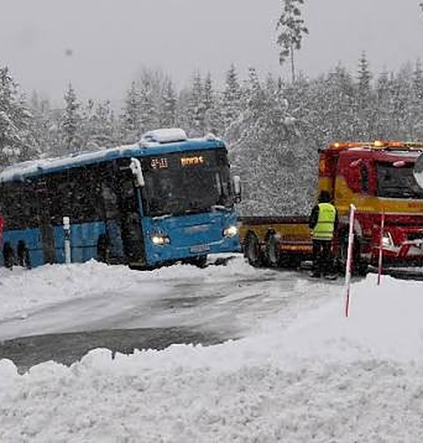

Skolkatalog 28/30
Olovslundsskolan
Busskolan
 Bussen till
Bussen tillVällingbyskolan
Parodi · ej officiell skolkatalog
Fråga till politikerna
Varför är det här den bästa lösningen?
Bakom varje kalkyl och utredning finns ett barn. Några är bara sex år.
Ett barn börjar förskoleklass hösten 2027. Året därpå flyttas skolan ungefär sju kilometer bort. Varje morgon och varje eftermiddag, i två år, åker barnet buss genom Bromma i rusningstid. Det är två av lågstadiets tre år. De får barnet aldrig tillbaka.
- Vem ansvarar för att en sexåring sitter ordentligt, har bältet på och får hjälp av och på bussen?
- Hur hämtas ett sjukt barn sju kilometer bort i en familj utan bil?
- Stadens egna regler säger cirka två kilometer till skolan för de yngsta. Varför blir det sju?
- Varför har inte närliggande skolor som Abrahamsberg, Norra Ängby och Äppelviken, eller en lokal paviljong, utretts på riktigt? Och varför räknades Vällingby utan transport- och kapitalkostnader?
- Varför fick politikerna beskedet 2,5 år och föräldrarna 2 år, samma dag?
- Varför ska beslutet fattas nu, när förvaltningen själv medger att det finns väldigt lite dokumentation om vilka andra lösningar som valts bort?
Vi vill cykla, vi vill gå. Inte Bussas härifrån.
 Skriv under protestlistanStoppa evakueringen av Olovslundsskolan till Vällingbyskolan
Testa bussresan självKommunen säger att den ska ta max 15 minuter. Prova från där du står (Google Maps)
Skriv under protestlistanStoppa evakueringen av Olovslundsskolan till Vällingbyskolan
Testa bussresan självKommunen säger att den ska ta max 15 minuter. Prova från där du står (Google Maps)
Källor: yttrande och yrkande om återremiss till Utbildningsnämnden 2026-10-14 med bilagor, samt synpunkter från föräldrar.
Förskoleklass
 Linje 2
Linje 2
 Linje 445
Linje 445Årskurs 1


Årskurs 2
 Linje 2Linje 445
Linje 2Linje 445Årskurs 3
Årskurs 4
Linje 2Årskurs 5
Linje 445Årskurs 6